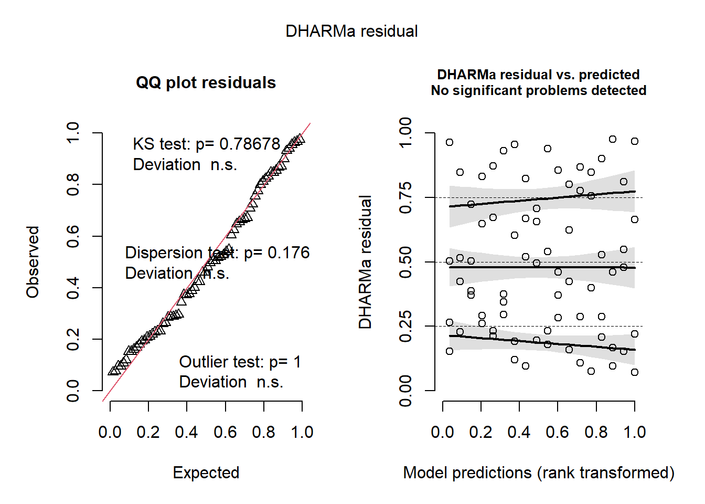

Day 2 Mixed models I
January 29th, 2026
2.1 Recall the most common statistical model
\[\mathbf{y} \sim N(\boldsymbol\mu, \boldsymbol\Sigma),\]
where:
- \(\mathbf{y} \equiv [y_1, y_2, \dots, y_n]'\) contains the response data,
- \(\boldsymbol{\mu} \equiv [\mu_1, \mu_2, \dots, \mu_n]'\) contains the expected values of said data,
- \(\boldsymbol\Sigma\) is the variance-covariance matrix.
The most typical model typically has:
- \(\boldsymbol\mu = \mathbf{X}\boldsymbol{\beta}\) and
- \(\boldsymbol\Sigma = \sigma^2\mathbf{I}\).
We can write the default model in most software written above as:
\[\mathbf{y} \sim N(\boldsymbol{\mu}, \Sigma),\\ \begin{bmatrix}y_1 \\ y_2 \\ y_3 \\ y_4 \\ \vdots \\ y_n \end{bmatrix} \sim N \left( \begin{bmatrix}\mu_1 \\ \mu_2 \\ \mu_3 \\ \mu_4 \\ \vdots \\ \mu_n \end{bmatrix}, \sigma^2 \begin{bmatrix} 1 & 0 & 0 & 0 & \dots & 0 \\ 0 & 1 & 0 & 0 & \dots & 0 \\ 0 & 0 & 1 & 0 & \dots & 0 \\ 0 & 0 & 0 & 1 & \dots & 0 \\ \vdots & \vdots & \vdots & \vdots & \ddots & \vdots\\ 0 & 0 & 0 & 0 & \dots & 1 \end{bmatrix} \right),\]
which is the same as
\[\begin{bmatrix}y_1 \\ y_2 \\ y_3 \\ y_4 \\ \vdots \\ y_n \end{bmatrix} \sim N \left( \begin{bmatrix}\mu_1 \\ \mu_2 \\ \mu_3 \\ \mu_4 \\ \vdots \\ \mu_n \end{bmatrix}, \begin{bmatrix} \sigma^2 & 0 & 0 & 0 & \dots & 0 \\ 0 & \sigma^2 & 0 & 0 & \dots & 0 \\ 0 & 0 & \sigma^2 & 0 & \dots & 0 \\ 0 & 0 & 0 & \sigma^2 & \dots & 0 \\ \vdots & \vdots & \vdots & \vdots & \ddots & \vdots\\ 0 & 0 & 0 & 0 & \dots & \sigma^2 \end{bmatrix} \right).\]
In summary, the assumptions are:
- Linearity (or whatever the deterministic equation is)
- Normality
- Independence
- Constant variance
2.1.1 Types of predictors
Quantitative predictors
Just like yesterday:
\[y_{i} \sim N(\mu_i, \sigma^2), \\ \mu_i = \beta_0 + x_{1i} \beta_1 + x_{2i} \beta_2,\] and say that \(y_{i}\) is the observed value for the \(i\)th observation, \(\beta_0\) is the intercept, \(x_{1i}\) if the \(i\)th observation of \(x_1\), \(\beta_1\) is the expected increase in \(y\) for each unit increase of \(x_1\), \(x_{2i}\) if the \(i\)th observation of \(x_2\), \(\beta_2\) is the expected increase in \(y\) for each unit increase of \(x_2\).
Qualitative predictors
Instead of a quantitative predictor, we could have a qualitative (or categorical) predictor. Let the qualitative predictor have two possible levels, A and B. We could use the same model as before,
\[y_{i} \sim N(\mu_i, \sigma^2), \\ \mu_i = \beta_0 + x_i \beta_1,\]
and say that \(y_{i}\) is the observed value for the \(i\)th observation, \(\beta_0\) is the expected value for A, \(x_i = 0\) if the \(i\)th observation belongs to A, and \(x_i = 1\) if the \(i\)th observation belongs to B. That way, \(\beta_1\) is the difference between A and B.
If the categorical predictor has more than two levels,
\[y_{i} \sim N(\mu_i, \sigma^2), \\ \mu_i = \beta_0 + x_{1i} \beta_1 + x_{2i} \beta_2+ ... + x_{ji} \beta_j,\]
\(y_{i}\) is still the observed value for the \(i\)th observation, \(\beta_0\) is the expected value for A (sometimes in designed experiments this level is a control),
\[x_{1i} = \begin{cases} 1, & \text{if } \text{Treatment is B} \\ 0, & \text{if } \text{else} \end{cases}, \\ x_{2i} = \begin{cases} 1, & \text{if } \text{Treatment is C} \\ 0, & \text{if } \text{else} \end{cases}, \\ \\ \dots, \\ \\ x_{ji} = \begin{cases} 1, & \text{if } \text{Treatment is J} \\ 1, & \text{if } \text{else} \end{cases}. \]
That way, all \(\beta\)s are the differences between the treatment and the control.
2.2 Variations to that very common statistical model
We can adapt the assumptions one by one:
- Linearity – change the deterministic equation
- Normality – assume a different distribution
- Independence – implement a hierarchical/multi-level/mixed model that models the data that were generated together.
- Constant variance – model the variance/assume a different distribution where the mean and the variance are not independent.
2.3 Relaxing the assumption of independence
- What if we can model the variance-covariance matrix with something else that’s not \(\sigma^2 \mathbf{I}\)?
This is a visualization of the classical, default statistical model:

This is a visualization of what’s coming with mixed models:
Example 1:

Example 2:

2.4 Fixed effects and random effects
In what follows, we have a small elaboration of what it means to model that “structure in the data” (i.e., the groups of similarly generated points).
2.4.1 Going from fixed effects to fixed+random effects
The data below were generated by an experiment that tested 18 sorghum genotypes in a randomized complete block design.
- Discuss the treatment structure
- Discuss the design structure
## 'data.frame': 72 obs. of 4 variables:
## $ env : Factor w/ 6 levels "E1","E2","E3",..: 3 3 3 3 3 3 3 3 3 3 ...
## $ rep : Factor w/ 4 levels "R1","R2","R3",..: 1 1 1 1 1 1 1 1 1 1 ...
## $ gen : Factor w/ 18 levels "G01","G02","G03",..: 1 2 3 4 5 6 7 8 9 10 ...
## $ yield: num 449 458 545 547 784 ...Now, remember that the blocks are supposed to indicate “groups of similar experimental units”. Said “groups of similar experimental units” means that the assumption of independence would be kind of a stretch. In reality, all observations from the same block (are supposed to) have something in common. It’s not reasonable to assume that the observations are independent, because observations from the same field have more in common than observations from different fields. They share more similar soil and, with that, a baseline fertility and yield.
Basically, we expect the genotypes relative performance to be similar across fields, but the baseline (a.k.a., the intercept) to be field-specific. Then, we could say
\[y_{ij} = \beta_{0j} + G_i + \varepsilon_{ij}, \\ \varepsilon_{ij} \sim N(0, \sigma^2),\]
where \(\beta_{0j}\) is a block-specific intercept, and \(G_i\) is the genotype effect.
Now, there are different ways to model that block-specific intercept.
This is a big forking path in statistical modeling. All-fixed models estimate the effects of everything. Mixed-effects models indicate what is similar to what via random effects.
Fixed effects
We could define an all-fixed model,
\[y_{ij} = \beta_{0j} + G_i + \varepsilon_{ij}, \\ \beta_{0j} = \beta_0 + u_j \\ \varepsilon_{ij} \sim N(0, \sigma^2),\]
where \(u_j\) is the effect of the \(j\)th block on the intercept (i.e., on the baseline). In this case, \(u_j\) is a fixed effect, which means it may be estimated via least squares estimation or maximum likelihood estimation. Under both least squares and maximum likelihood (assuming normal distribution), we may estimate the parameters by computing
\[\hat{\boldsymbol{\beta}}_{ML} = (\mathbf{X}^T\mathbf{X})^{-1}\mathbf{X}^T\mathbf{y},\]
which yields the minimum variance unbiased estimate of \(\boldsymbol{\beta}\).
We still have \[\boldsymbol{\Sigma} = \begin{bmatrix} \sigma_{\varepsilon}^2 & 0 & 0 & 0 & \dots & 0 \\ 0 & \sigma_{\varepsilon}^2 & 0 & 0 & \dots & 0 \\ 0 & 0 & \sigma_{\varepsilon}^2 & 0 & \dots & 0 \\ 0 & 0 & 0 & \sigma_{\varepsilon}^2 & \dots & 0 \\ \vdots & \vdots & \vdots & \vdots & \ddots & \vdots\\ 0 & 0 & 0 & 0 & \dots & \sigma_{\varepsilon}^2 \end{bmatrix}\].
##
## Call:
## lm(formula = yield ~ gen + rep, data = dat_blocked)
##
## Residuals:
## Min 1Q Median 3Q Max
## -349.66 -81.58 -1.08 78.47 318.59
##
## Coefficients:
## Estimate Std. Error t value Pr(>|t|)
## (Intercept) 672.03 86.46 7.773 3.29e-10 ***
## genG02 -66.52 113.20 -0.588 0.559393
## genG03 223.07 113.20 1.971 0.054201 .
## genG04 167.40 113.20 1.479 0.145336
## genG05 61.05 113.20 0.539 0.591996
## genG06 -267.20 113.20 -2.361 0.022111 *
## genG07 355.20 113.20 3.138 0.002826 **
## genG08 159.53 113.20 1.409 0.164820
## genG09 231.31 113.20 2.043 0.046198 *
## genG10 156.66 113.20 1.384 0.172393
## genG11 146.29 113.20 1.292 0.202071
## genG12 -42.87 113.20 -0.379 0.706453
## genG13 243.18 113.20 2.148 0.036467 *
## genG14 1.06 113.20 0.009 0.992565
## genG15 64.72 113.20 0.572 0.570007
## genG16 22.81 113.20 0.201 0.841122
## genG17 -296.66 113.20 -2.621 0.011534 *
## genG18 448.28 113.20 3.960 0.000233 ***
## repR2 -150.83 53.36 -2.827 0.006704 **
## repR3 -85.66 53.36 -1.605 0.114592
## repR4 -124.21 53.36 -2.328 0.023936 *
## ---
## Signif. codes: 0 '***' 0.001 '**' 0.01 '*' 0.05 '.' 0.1 ' ' 1
##
## Residual standard error: 160.1 on 51 degrees of freedom
## Multiple R-squared: 0.6748, Adjusted R-squared: 0.5473
## F-statistic: 5.291 on 20 and 51 DF, p-value: 7.64e-07Random effects
We could also assume that the effects of the \(j\)th block (i.e., \(u_j\)) arise from a random distribution. The most common assumption (and the default in most statistical software) is that
\[u_j \sim N(0, \sigma^2_b).\]
Now, we don’t estimate the effect, but the variance \(\sigma^2_b\).
Note that there are \(J\) levels of the random effects, meaning that a random effect is always categorical.
Also, now
\[\hat{\boldsymbol{\beta}}_{REML} = (\mathbf{X}^T \mathbf{V}^{-1} \mathbf{X})^{-1}\mathbf{X}^T \mathbf{V}^{-1} \mathbf{y},\]
where \(\mathbf{V} = Var(\mathbf{y})\) is the variance-covariance matrix of \(\mathbf{y}\), including residual variance and random-effects variance. Note that this formula yields the same point estimate for \(\boldsymbol{\beta}\), but with a different confidence interval.
Now, the variance-covariance matrix \(\boldsymbol{\Sigma}\) of the marginal distribution has changed.
## Linear mixed model fit by REML ['lmerMod']
## Formula: yield ~ gen + (1 | rep)
## Data: dat_blocked
##
## REML criterion at convergence: 729.7
##
## Scaled residuals:
## Min 1Q Median 3Q Max
## -1.99895 -0.58043 -0.01854 0.52108 1.92022
##
## Random effects:
## Groups Name Variance Std.Dev.
## rep (Intercept) 2906 53.91
## Residual 25627 160.09
## Number of obs: 72, groups: rep, 4
##
## Fixed effects:
## Estimate Std. Error t value
## (Intercept) 581.86 84.46 6.889
## genG02 -66.52 113.20 -0.588
## genG03 223.07 113.20 1.971
## genG04 167.40 113.20 1.479
## genG05 61.05 113.20 0.539
## genG06 -267.20 113.20 -2.361
## genG07 355.20 113.20 3.138
## genG08 159.53 113.20 1.409
## genG09 231.31 113.20 2.043
## genG10 156.66 113.20 1.384
## genG11 146.29 113.20 1.292
## genG12 -42.87 113.20 -0.379
## genG13 243.18 113.20 2.148
## genG14 1.06 113.20 0.009
## genG15 64.72 113.20 0.572
## genG16 22.81 113.20 0.201
## genG17 -296.66 113.20 -2.621
## genG18 448.28 113.20 3.960##
## Correlation matrix not shown by default, as p = 18 > 12.
## Use print(x, correlation=TRUE) or
## vcov(x) if you need it2.5 Generalities on mixed models
Mixed models combine fixed effects and random effects. Generally speaking, we can write out a mixed-effects model using the model equation form, as
\[\mathbf{y} = \mathbf{X} \boldsymbol{\beta} + \mathbf{Z}\mathbf{u} + \boldsymbol{\varepsilon}, \\ \begin{bmatrix}\mathbf{u} \\ \boldsymbol{\varepsilon} \end{bmatrix} \sim \left( \begin{bmatrix}\boldsymbol{0} \\ \boldsymbol{0} \end{bmatrix}, \begin{bmatrix}\mathbf{G} & \boldsymbol{0} \\ \boldsymbol{0} & \mathbf{R} \end{bmatrix} \right),\]
where \(\mathbf{y}\) is the observed response, \(\mathbf{X}\) is the matrix with the explanatory variables, \(\mathbf{Z}\) is the design matrix, \(\boldsymbol{\beta}\) is the vector containing the fixed-effects, \(\mathbf{u}\) is the vector containing the random effects, \(\boldsymbol{\varepsilon}\) is the vector containing the residuals, \(\mathbf{G}\) is the variance-covariance matrix of the random effects, and \(\mathbf{R}\) is the variance-covariance matrix of the residuals. Note that \(\mathbf{X} \boldsymbol{\beta}\) is the fixed effects part of the model, and \(\mathbf{Z}\mathbf{u}\) is the random effects part of the model.
Using the probability distribution form, we can then say that \(E(\mathbf{y}) = \mathbf{X}\boldsymbol{\beta}\) and \(Var(\mathbf{y}) = \mathbf{V} = \mathbf{Z}\mathbf{G}\mathbf{Z}' + \mathbf{R}\). Usually, we assume \[\mathbf{G} = \sigma^2_u \begin{bmatrix} 1 & 0 & 0 & \dots 0 \\ 0 & 1 & 0 & \dots & 0 \\ 0 & 0 & 1 & \dots & 0 \\ \vdots & \vdots & \vdots & \ddots & \vdots \\ 0 & 0 & 0 & \dots & 1 \end{bmatrix}\] and \[\mathbf{R} = \sigma^2 \begin{bmatrix} 1 & 0 & 0 & \dots & 0 \\ 0 & 1 & 0 & \dots & 0 \\ 0 & 0 & 1 & \dots & 0 \\ \vdots & \vdots & \vdots & \ddots & \vdots \\ 0 & 0 & 0 & \dots & 1 \end{bmatrix} \].
Then,
\[\mathbf{y} \sim N(\boldsymbol{\mu}, \Sigma), \\ \Sigma = \begin{bmatrix} \sigma^2 + \sigma^2_u & \sigma^2_u & 0 & 0 & 0 & 0 &\dots & 0\\ \sigma^2_u & \sigma^2 + \sigma^2_u & 0 & 0 & 0 & 0 & \dots & 0 \\ 0 & 0 & \sigma^2 + \sigma^2_u & \sigma^2_u & 0 & 0 & \dots & 0 \\ 0 & 0 & \sigma^2_u & \sigma^2 + \sigma^2_u & 0 & 0 & \dots & 0 \\ 0 & 0 & 0 & 0 & \sigma^2 + \sigma^2_u & \sigma^2_u & \dots & 0 \\ 0 & 0 & 0 & 0 & \sigma^2_u & \sigma^2 + \sigma^2_u & \dots & \vdots \\ \vdots & \vdots & \vdots & \vdots & \vdots & \vdots & \ddots & \vdots \\ 0 & 0 & 0 & 0 & 0 & 0 & \dots & \sigma^2 + \sigma^2_u \end{bmatrix}.\]
Take your time to digest the variance-covariance matrix above. What type of data do you think generated it?
2.5.1 Random effects
- By definition, random effects are regression coefficients that arise from a random distribution.
- Typically, a random effect \(u \sim N(0, \sigma^2_u)\).
- Note that this model for the parameter may result in shrinkage.
- We estimate the variance \(\sigma^2_u\).
- Calculating degrees of freedom can get much more complex than in all-fixed effects models (e.g., with unbalanced data, spatio-temporally correlated data, or non-normal data).
- In the context of designed experiments, random effects are assumed to be independent to each other and independent to the residual.
2.5.2 Estimation of parameters
“Estimation” is a term held mostly exclusive to fixed effects and variance components. Restricted maximum likelihood estimation (REML) is the default in most mixed effects models because, for small data (aka most experimental data), maximum likelihood (ML) provides variance estimates that are downward biased. - In REML, the likelihood is maximized after accounting for the model’s fixed effects.
- In ML, \(\ell_{ML}(\boldsymbol{\sigma; \boldsymbol{\beta}, \mathbf{y}}) = - (\frac{n}{2}) \log(2\pi)-(\frac{1}{2}) \log ( \vert \mathbf{V}(\boldsymbol\sigma) \vert ) - (\frac{1}{2}) (\mathbf{y}-\mathbf{X}\boldsymbol{\beta})^T[\mathbf{V}(\boldsymbol\sigma)]^{-1}(\mathbf{y}-\mathbf{X}\boldsymbol{\beta})\)
- In REML, \(\ell_{REML}(\boldsymbol{\sigma};\mathbf{y}) = - (\frac{n-p}{2}) \log (2\pi) - (\frac{1}{2}) \log ( \vert \mathbf{V}(\boldsymbol\sigma) \vert ) - (\frac{1}{2})log \left( \vert \mathbf{X}^T[\mathbf{V}(\boldsymbol\sigma)]^{-1}\mathbf{X} \vert \right) - (\frac{1}{2})\mathbf{r}[\mathbf{V}(\boldsymbol\sigma)]^{-1}\mathbf{r}\),
where \(p = rank(\mathbf{X})\), \(\mathbf{r} = \mathbf{y}-\mathbf{X}\hat{\boldsymbol{\beta}}_{ML}\).
- Start with initial values for \(\boldsymbol{\sigma}\), \(\tilde{\boldsymbol{\sigma}}\).
- Compute \(\mathbf{G}(\tilde{\boldsymbol{\sigma}})\) and \(\mathbf{R}(\tilde{\boldsymbol{\sigma}})\).
- Obtain \(\boldsymbol{\beta}\) and \(\mathbf{b}\).
- Update \(\tilde{\boldsymbol{\sigma}}\).
- Repeat until convergence.
- Start with initial values for \(\boldsymbol{\sigma}\), \(\tilde{\boldsymbol{\sigma}}\).
2.5.3 Fixed effects versus random effects
What is behind a random effect:
- $ N ( , (^T ^{-1} )^{-1} ) $
- \(u_j \sim N(0, \sigma^2_u)\)
- What process is being studied?
- How were the levels selected? (randomly, carefully selected)
- How many levels does the factor have, vs. how many did we observe?
- BLUEs versus BLUPs.
Read more in in Gelman (2005, page 20), “Analysis of variance—why it is more important than ever” [link], and Gelman and Hill (2006), page 245.